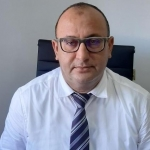

Surgery of
Obesity & Diabetes
Specialist care for surgical treatment options related to obesity and diabetes.
Explore
Dr Ben Taher ChafikGeneral Surgery & Digestive SurgeryGeneral surgery & digestive surgery · Bizerte Médicale
Dr Ben Taher Chafik is a specialist in general and digestive surgery, providing thoughtful care and clear guidance at every step.
Request an Appointment“Good care starts with being heard, understood, and given a clear path forward.”
— Dr Ben Taher Chafik01 — A considered approach
Surgery is a significant decision. My role is to make each part of that decision feel informed, unhurried, and personal.
Specialist in general and digestive surgery, including obesity and diabetes surgery, liver and biliary surgery, stomach, pancreas and intestinal surgery, proctology, hernia surgery, coelioscopic surgery, and cancer surgery.
Former Attaché of Hospitals of France and former University Hospital Assistant at the Faculty of Medicine.
Start a conversation02 — Areas of care
A calm, collaborative approach to common surgical concerns and the questions that come with them.
Specialist care for surgical treatment options related to obesity and diabetes.
ExploreDigestive surgery covering the liver-biliary system, stomach, pancreas, and intestines, as well as proctology and hernias.
ExploreMinimally invasive coelio surgery and surgical care for cancers.
Explore03 — Career & achievements
04 — What to expect
Meet with your surgeon to discuss your symptoms, diagnosis, goals, and treatment options.
Receive clear instructions and practical guidance before your procedure.
Continue your recovery with planned follow-up and support after surgery.
A clear next step
Share your details and our clinic team will contact you to arrange or confirm an appointment.
Your information is used only to respond to this request. Please do not include medical details in this form.
05 — Visit the clinic